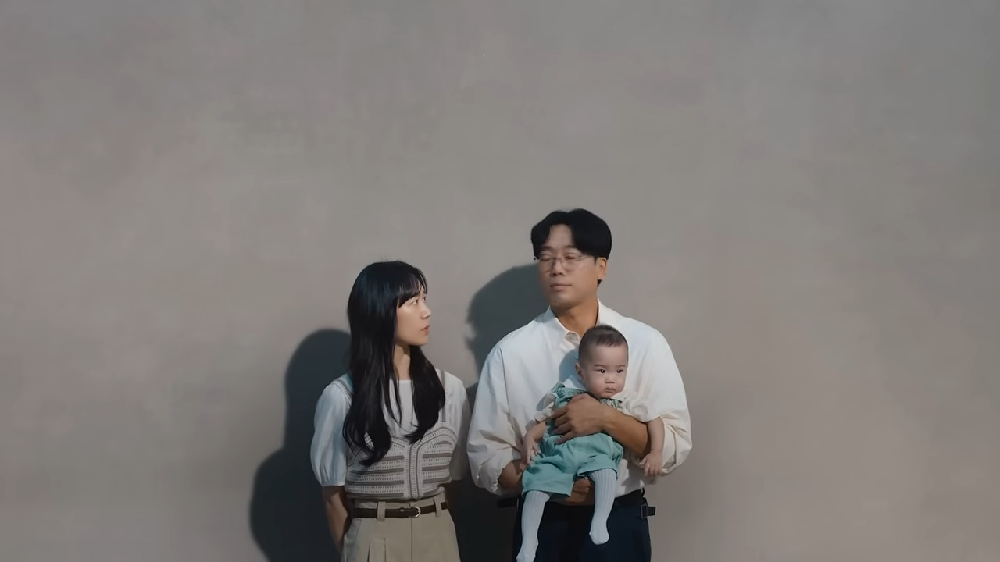
문명의 충돌 2를 보다가 울었다. 아파트 광고였는데, 단지 이름도 평면도도 분양가도 나오지 않는 2분 10초짜리 영상이 왜 이렇게 오래 남는지 궁금해서 스위첸의 세 캠페인을 다시 돌려 봤다.
장면 캡처는 KCC건설 스위첸 공식 유튜브 영상에서 해설 목적으로 가져왔고, 이미지마다 출처와 재생 시점을 적었다. 영상은 직접 보는 편이 훨씬 낫다. 문명의 충돌 ↗ · 문명의 충돌 2 ↗ · 식구의 부활 ‘간장 계란밥’ ↗
1. 2020 문명의 충돌 — “나 안 가!”에서 시작됐다
2020년 7월 공개된 광고의 주인공은 결혼 4년 차 부부다. 외출을 서두르던 남편이 “그거 예뻐, 아무거나 입어, 똑같아, 똑같아”라고 하자 아내가 폭발한다. “나 안 가!” 이 장면에서 많은 사람이 자기 집 거실을 떠올렸다.
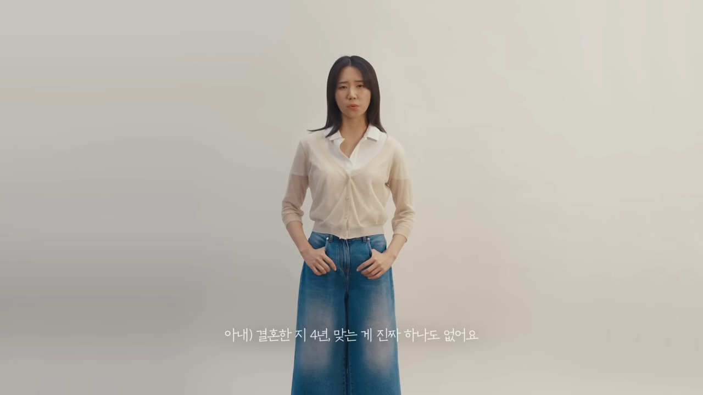
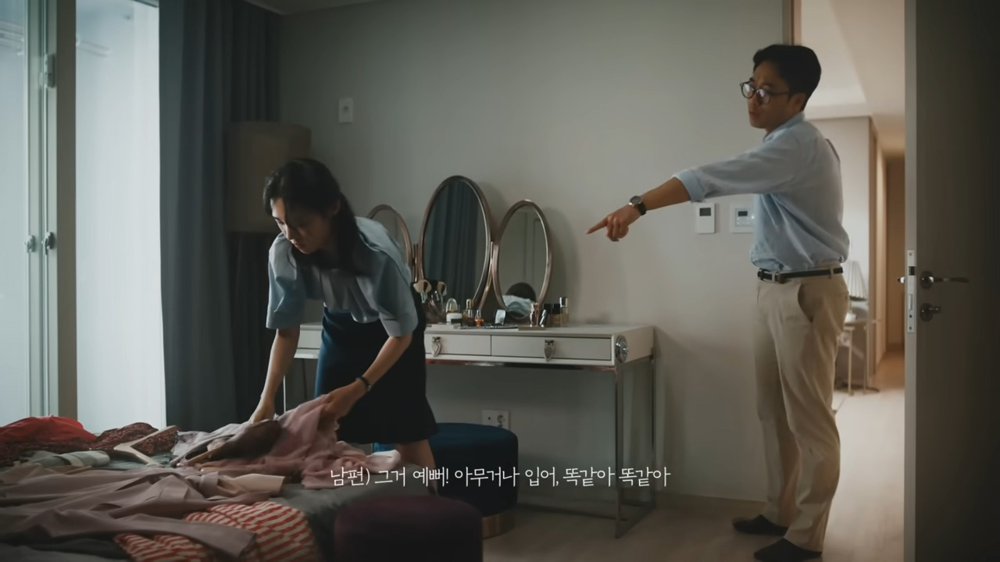
갈등 목록은 하나같이 사소하다. 화장실에서 선 채로 볼일을 보다 소변을 튀기는 남편, 냉장고가 넘치도록 물건을 쟁여 두는 아내, 휴일이면 나가자고 조르는 아내와 제발 좀 쉬자는 남편, 경품에 당첨됐다며 신상품을 들여오는 아내가 차례로 나온다. 한 줄로 쓰면 별것 아닌데, 당사자에게는 웃을 수만은 없는 일이다.
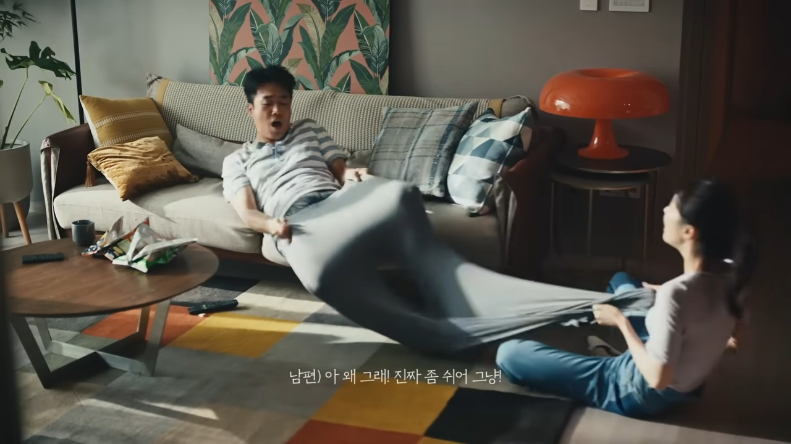
그런데 영상은 싸움으로 끝나지 않는다. 인터뷰에서 두 사람은 서로를 “좋은 거 보면 제일 먼저 생각나는 사람”, “맛있는 거 먹으면 같이 먹고 싶은 사람”이라고 말한다. 아내가 실수로 망가뜨린 남편의 프라모델을 둘이 머리를 맞대고 고쳐 보는 장면이 이어진다.
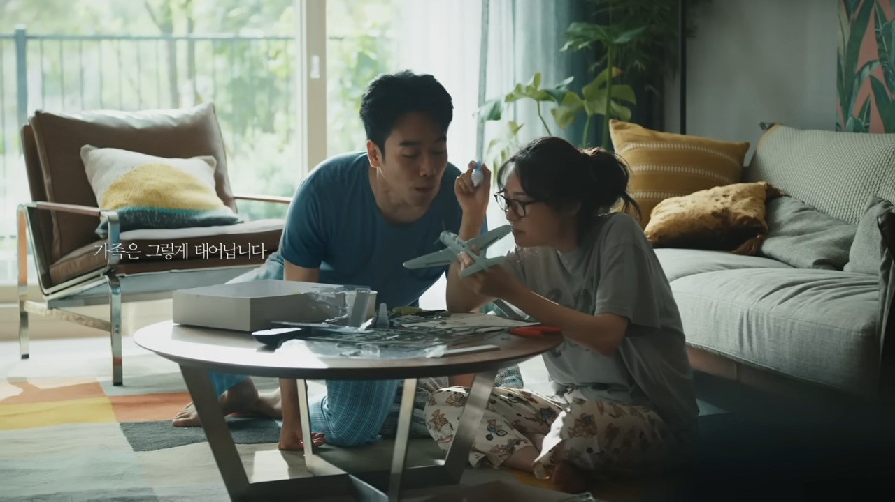
끝에 나오는 문장이 이 광고의 전부다. 서로 다른 문명이 만나 함께 지어가는 집이라는 메시지 끝에 “가족은 그렇게 태어납니다”가 나온다. 아파트 광고에서 집이 나오는 순간은 이 한 줄뿐이고, 그마저도 건물이 아니라 관계를 말한다. 캠페인 이름은 새뮤얼 헌팅턴의 같은 제목의 책을 연상시킨다는 평도 있다.
“우리 부부만 이렇게 사는 줄 알았더니 광고 한 편이 위로가 된 느낌이다”
“며칠째 부부싸움 후 내전 중이었는데 남편이 이 광고를 보고 미안하다고 문자가 왔다”
이 광고는 유튜브에서 약 3,763만 회(2026.11.3 확인)를 기록했고, 국내 4대 광고제에서 모두 수상했다. 이 숫자 뒤에는 ‘나 안 가’ 한 마디로 모두가 자기 집을 떠올렸다는 사실이 있다.
2. 2023 문명의 충돌 2 — “저도 아빠가 처음인데요”
3년 뒤인 2023년 7월 후속편이 나왔다. 같은 부부, 같은 배우(김남희, 박예니)다. 이번에는 아이가 생겼다. 영상 길이는 2분 10초다.
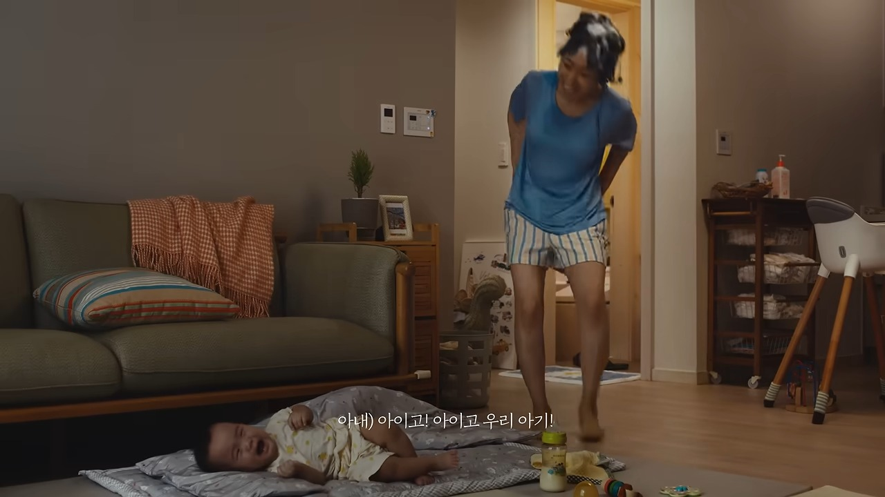
머리를 감다가 아이 울음소리에 거품도 못 헹구고 뛰어나오는 엄마, 아기가 잠들 때를 기다려 손발톱을 깎는 아빠. 육아를 해 본 사람이라면 누구나 겪어 본 장면들로 채워진다.
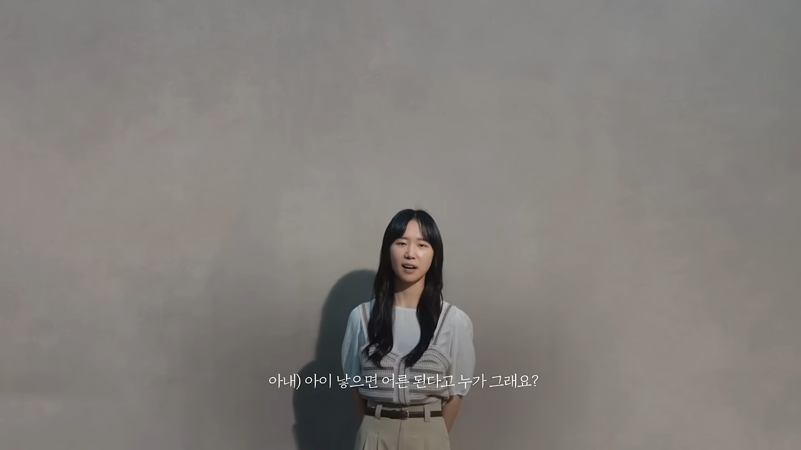
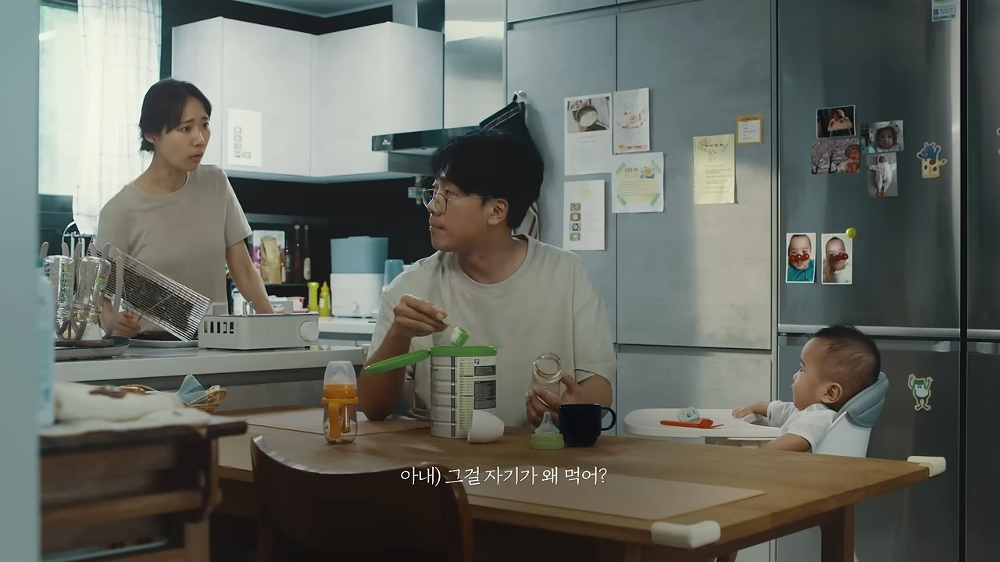
퇴근길에 기저귀를 사 온 남편에게 아내는 “기저귀 그거 아니야, 몇 번을 얘기해”라고 말한다. 그리고 이 광고에서 가장 많이 회자된 두 줄이 나온다.
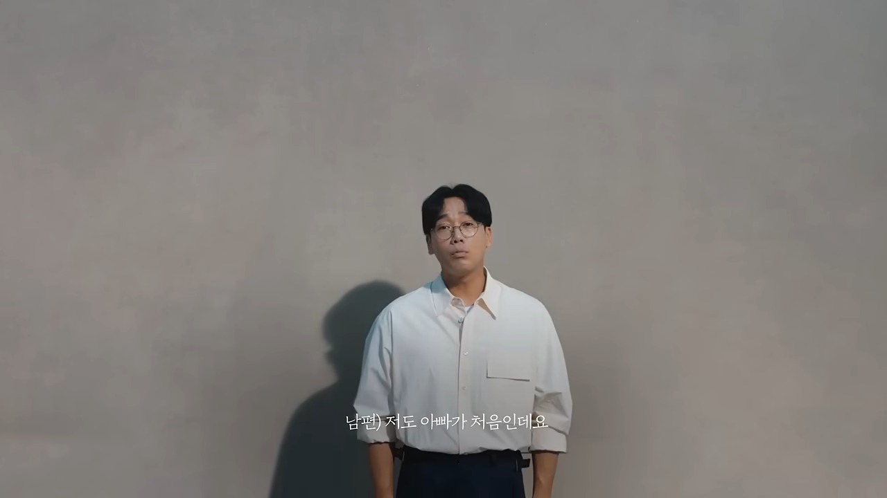
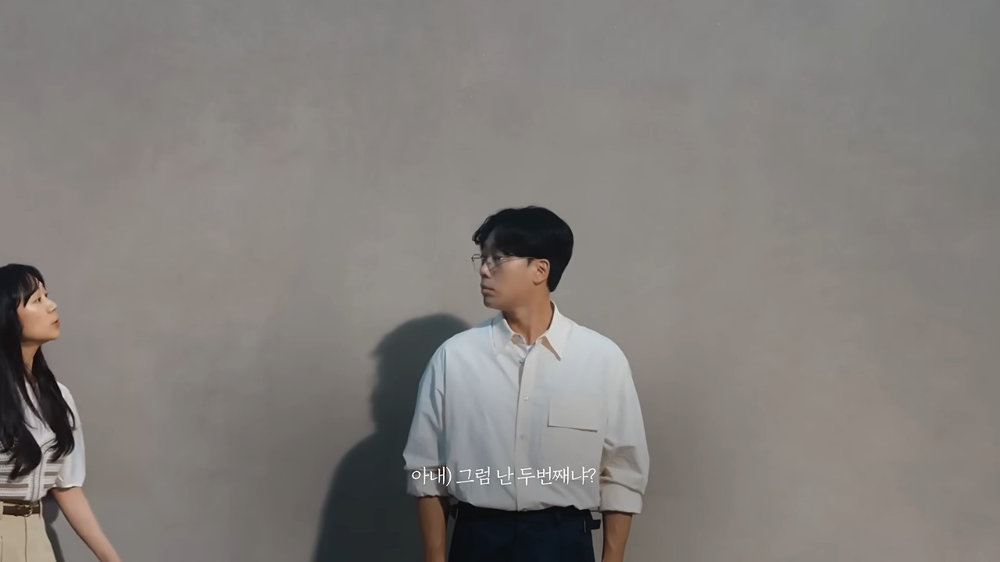
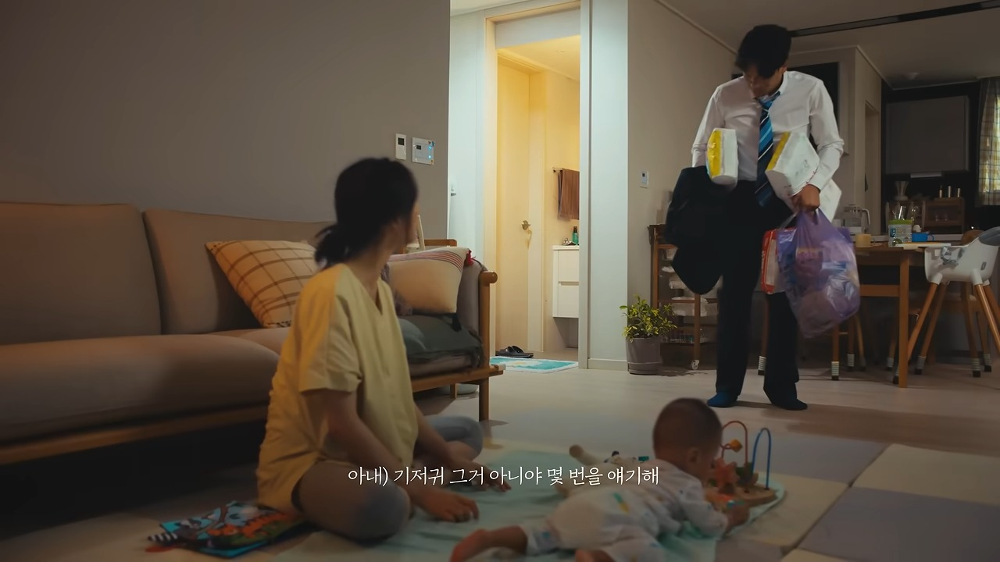
남편이 “저도 아빠가 처음인데요”라고 하자 아내가 “그럼 난 두 번째냐?”고 받아친다. 한쪽 편을 들 수 없는 대사다. 둘 다 맞는 말이라서 더 아프다.
왜 울컥했을까 (필자 해석)
- 악당이 없다. 아내는 먹이고 씻기고 재우느라 녹초고, 남편은 야근하고 돌아와 서툴다. 둘 다 틀리지 않았다.
- 인터뷰 컷이 판사 자리에서 끌어내린다. 각자의 입장을 카메라에 직접 말하게 해서 보는 사람이 누구 편도 들 수 없다.
- 싸움의 끝이 화해 선언이 아니라 같은 방향이다. 마지막에 부부는 잠든 아이 곁에 나란히 앉아 함께 손발톱을 깎는다. 말 없이 같은 일을 하는 모습이 가장 큰 위로로 남는다.
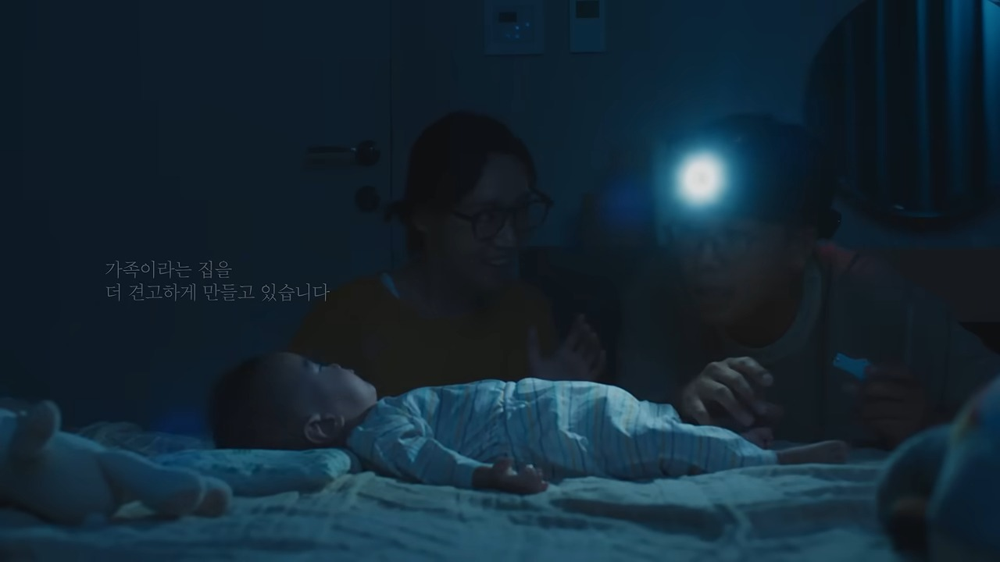
마지막 자막은 “이 새로운 문명의 침공은 가족이라는 집을 더 견고하게 만들고 있습니다”다. 힘들지만 “죽을 만큼 행복하다”는 인터뷰의 말이 이 문장으로 정리된다.
“아기 간신히 재우고 지쳐서 아이스크림 먹다가 우연히 광고보고 찾아봤네요. 순간 울컥했어요. 너무 우리 부부 같아서…” (좋아요 2.2천)
“이 광고를 영화관에서 첨 봤는데 영화보다 훨씬 더 기억에 남더라구요. … 눈물이 핑 돌았습니다.” (좋아요 3.8천)
“육아가정중 한 가정을 그냥 카메라들이밀고 찍은거임… 이건 연기가아니고 진짜 현실육아” (좋아요 5.7천)
“26년 2월 아들본 아빠입니다. 새로운 문명 각오 단단히 하겠습니다.” (좋아요 182)
KCC건설 관계자는 시청자들이 ‘출산장려 공익캠페인’이라고 부르는 댓글을 보고 “상상도 못한 일이라 놀랐다”고 말했다. 광고 제작 때는 의도하지 않은 결과였다는 설명이다. 이 영상은 약 3,742만 회(2026.11.3 확인)를 기록했다.
3. 2024 식구의 부활 — 간장 계란밥 한 그릇
2024년 7월 26일 공개된 ‘식구의 부활’은 부부 이야기에서 식탁으로 이동한다. 아빠가 만든 간장 계란밥, 비 오는 날의 김치전, 딸에게 위로를 전하는 매운 떡볶이, 생일 축하의 황태 미역국, 가족을 응원하는 돼지수육 구이 등 5편이다. ‘식구’는 한집에서 함께 살며 끼니를 같이하는 사람이라는 뜻이다.
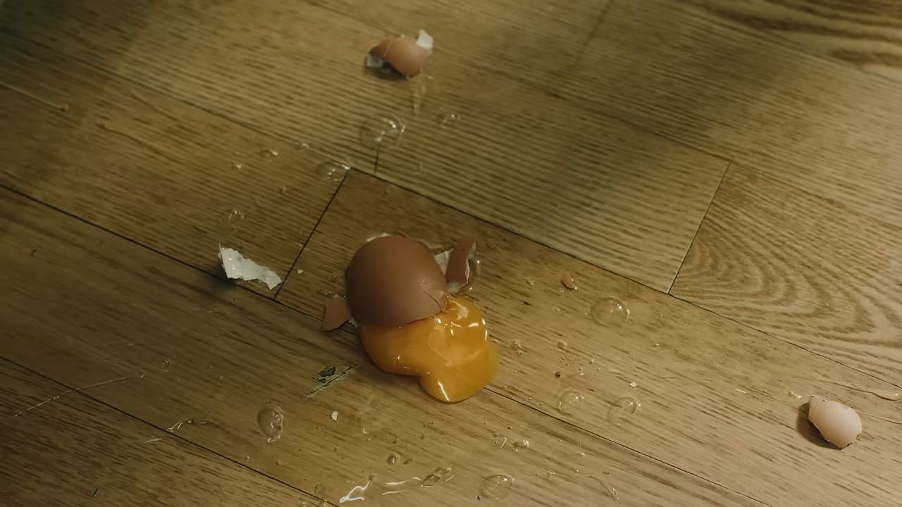
이 시리즈의 포인트는 실수를 지우지 않았다는 점이다. 요리 과정에서 일어날 법한 실수를 그대로 연출했다고 KCC건설이 밝혔다. 영상 속 아빠의 계란은 바닥에서 깨지고, 나레이션은 “계란은 원래 잘 깨집니다”라고 담담하게 말한다.
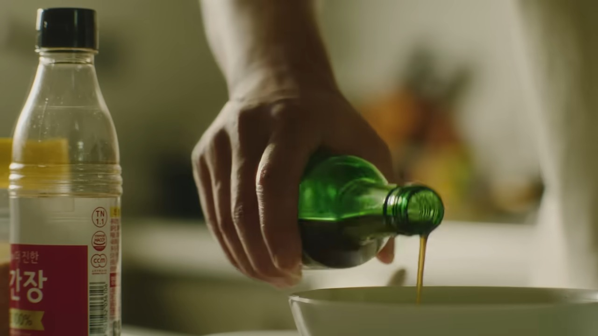
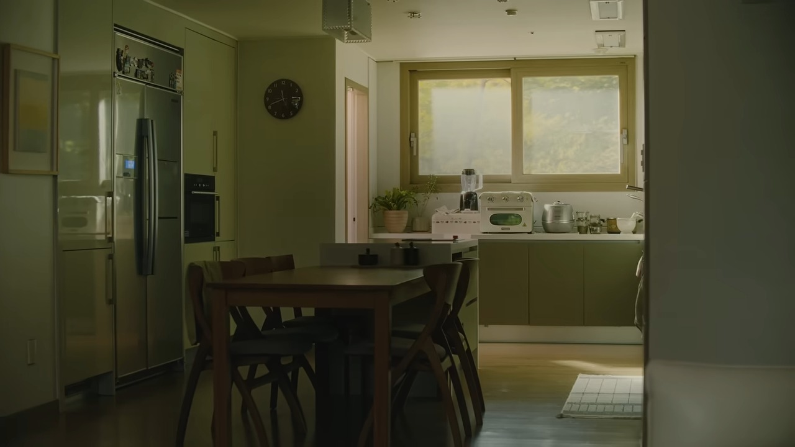
5편은 공개 열흘 만에 합산 조회수 1,000만 회를 넘었고, ‘간장 계란밥’ 한 편은 지금 약 1,476만 회다(2026.11.3 확인). 댓글에는 이런 말이 있다.
“광고를 안볼려고 프리미엄을 했지만 이제는 광고를 찾아서 보네.” (좋아요 21)
“내가 이제는 건설사 광고 채널을 구독을 한다.. 진짜 대단하다 ..” (좋아요 10)
“그전에 광고가 너무 좋아서 이건 너무 대충 만든 광고인듯” (좋아요 6)
마지막 댓글처럼 반응이 한결같지는 않다. 기대가 높아진 시청자에게는 담백한 한 끼가 싱겁게 느껴질 수도 있다는 뜻이다. 그래도 이 시리즈는 올해의 광고상 그랑프리를 받아 문명의 충돌 2에 이어 2년 연속 최고상을 차지했다.
4. 얼마나 잘 만든 광고인가 — 브랜딩 인사이트
먼저 세 편을 한눈에 놓고 본다.
| 캠페인 | 공개 | 유튜브 영상 길이 | 소재 | 조회수 (2026.11.3) | 대표 성과 |
|---|---|---|---|---|---|
| 문명의 충돌 | 2020.7 | 1분 39초 | 결혼 4년 차 부부의 일상 충돌 | 약 3,763만 | 국내 4대 광고제 모두 수상 |
| 문명의 충돌 2 – 신문명의 출현 | 2023.7 | 2분 10초 | 아이가 생긴 뒤의 현실 육아 | 약 3,742만 | 4대 광고제 모두 수상, 올해의 광고상 그랑프리 |
| 식구의 부활 (5편) | 2024.7 | 1분(간장 계란밥 기준) | 가족이 함께 먹는 한 끼 | 간장 계란밥 약 1,476만 (5편 합산은 열흘 만에 1,000만) | 대한민국 광고대상 TV 부문 대상, 올해의 광고상 그랑프리(2년 연속) |
조회수는 공식 유튜브 채널 기준이며 시점에 따라 달라진다. 수상 내역은 KCC건설과 캠페인 인사이트 등 공개 자료를 따랐다.
상품 대신 ‘그 안의 삶’을 판다
이노션의 스위첸 담당자는 “‘아파트를 사고 싶게 하는 광고’보다는 사람과 사람, 가족이란 관계 속에서 ‘함께 살아가는 집’의 가치를 이야기하고 싶다”고 말했다. 평면도와 커뮤니티 대신 거실에서 일어나는 장면을 판다. 시청자는 “무슨 광고일까 생각할 겨를도 없이 몰입하다 보면 광고가 끝날 때쯤 아파트 브랜드 광고임을 알게 된다.”
히트작이 아니라 10년 넘는 연재다
이노션이 정리한 스위첸의 흐름을 보면 2012년 결혼 적령기 여성과 워킹맘, 2013년 결혼 12년 차 주부, 2014년 ‘아빠의 집’(“당신보다 더 큰 집은 없습니다”), 2015년 ‘자식의 자식 농사’, 2016년 ‘모두의 집’, 2017년 ‘가족의 집’, 2018년 ‘대한민국 첫 번째 집’, 2019년 ‘엄마의 빈방’으로 이어진다. 이 담당자가 꼽은 세 가지 키워드는 “집, 그 안의 사람, 그리고 진심”이다. 문명의 충돌은 이 연재의 연장선에서 나온 결과다.
필자 해석: 소재는 매년 바뀌어도 ‘집=사람 사이의 관계’라는 한 줄이 바뀌지 않았다. 브랜드 자산은 이렇게 쌓인다.
시간을 설계했다
결혼 4년 차 부부가 3년 뒤 아이를 낳은 부모로 돌아왔다. KCC건설은 “광고에서 시계열적 연속성을 갖고 제작한다는 자체가 모험이었다”고 밝혔다. 후속작 요청이 쇄도해 이례적으로 시즌2를 만들었다고도 한다. 댓글에는 “2탄 나온거보고 한번 더 보러 온사람”(좋아요 6.2천), “26년 10월 또 보고있는분???”처럼 시간을 건너 돌아온 시청자가 보인다. 시청자의 3년과 광고 속 3년이 겹친다.
좁게 겨냥해서 깊게 닿았다
KCC건설 웹진에 따르면 시즌2는 타깃이 육아 경험이 있는 부모여서 공감할 수 있는 폭이 기존보다 좁다는 우려가 제작 당시 있었다. 결과는 반대였다. 현재 아기를 키우는 부모의 공감 댓글이 이어졌고, 육아의 힘듦을 토로하는 댓글에 선배 부모의 위로 댓글이 달리는 따뜻한 상호작용도 일어났다.
필자 해석: 넓게 던지는 광고는 누구에게도 박히지 않는다. 한 사람의 구체적인 장면이 오히려 바깥으로 번진다.
디테일이 신뢰가 된다
분유를 한입 맛보는 아빠, 기저귀를 잘못 사 온 아빠, 머리 거품을 못 헹구고 뛰어나오는 엄마. 이 광고는 어떤 설명도 하지 않는다. 그런데 “이건 연기가 아니고 진짜 현실육아”라는 댓글이 좋아요 5.7천을 받는다. 식구의 부활도 “요리 과정에서 일어날 법한 각종 실수”를 그대로 두었다. 고증이 정확할수록 브랜드가 하는 말이 거짓말처럼 들리지 않는다.
형식을 메시지에 맞췄다
문명의 충돌 2는 보통의 광고보다 훨씬 긴 2분 10초다. “TV에서 광고 보고 유튜브로 광고 찾아보긴 처음이에요”라는 반응처럼 보러 찾아오는 광고가 됐다. 식구의 부활은 반대로 60초짜리 단편 5개로 쪼갰고, “광고를 안볼려고 프리미엄을 했지만 이제는 광고를 찾아서 보네”라는 댓글을 만들었다. 이야기가 필요한 만큼의 길이를 골랐다는 점이 같다.
브랜드는 마지막 한 문장과 로고로만 등장한다
문명의 충돌은 “가족은 그렇게 태어납니다”, 문명의 충돌 2는 “가족이라는 집을 더 견고하게 만들고 있습니다”로 끝난다. 감정을 다 쓴 뒤 단 한 문장으로 ‘가족’을 ‘집’에 연결하고, 그제야 로고가 나온다. 감정이 먼저고 카테고리가 나중이라서 사람들은 광고가 끝난 뒤에도 장면을 기억한다. 이 한 문장이 스위첸의 포지셔닝이다.
광고 밖에서 따져볼 것
- 광고 호감과 분양 성과는 별개로 봐야 한다. 이번에 확인한 공개 자료에는 이 캠페인이 분양률이나 매출에 얼마나 영향을 줬는지에 대한 수치가 없다. 조회수와 수상은 광고의 완성도와 화제성을 보여줄 뿐이다.
- 한 가지 가족상을 대변한다. 부부와 아이, 한집에서의 식사는 많은 사람에게 공감되지만 모든 가구 형태를 그리지는 않는다(필자 의견).
- 반응이 한결같지는 않다. 식구의 부활 댓글 중에는 “그전에 광고가 너무 좋아서 이건 너무 대충 만든 광고인듯”처럼 전작과 비교하는 평가도 있다. 기대치가 높아질수록 다음 편은 더 어렵다는 뜻이다.
- 집은 결국 단지의 조건으로 고른다. 광고 속 가족이 어디에 사는지와 실제 단지의 입지·가격·상품은 다른 문제다. 브동산이 단지 분석에서 따로 확인하는 이유다.
정리 — 광고를 기획할 때 던질 질문
다시 처음 질문으로 돌아간다. 집을 파는 광고가 어떻게 사람을 울렸을까. 답은 의외로 단순했다. 집을 팔지 않고 ‘집에서 일어나는 일’을 오래 말했기 때문이다. 그 말은 10년 넘게 같은 방향을 향했고, 시청자의 시간과 함께 흘렀다.
- 우리 브랜드가 파는 것은 상품인가, 그 상품 안에서 일어나는 장면인가.
- 한 편이 끝난 뒤에도 이어서 던질 질문이 있는가. 3년 뒤에도 같은 인물로 이야기를 이어 쓸 수 있는가.
- 타깃을 좁혔을 때 가장 깊게 공감할 한 사람의 장면을 알고 있는가.
- 누구나 아는 사소한 실수 하나를 지우지 않고 그대로 두었는가.
- 브랜드 이름이 나오기 전에 감정이 먼저 완성되는가. 마지막 한 문장이 그 감정을 우리 카테고리와 연결하는가.
브동산이 청약·분양 글을 쓸 때도 같은 질문을 쓴다. 숫자 앞에 그 집에서 시작될 하루를 먼저 떠올려 보는 것이다.
앞서 정리한 브랜드 언박싱 No.001에서도 문명의 충돌을 12번째 사례로 짧게 다뤘다. 이 글은 그 사례를 세 캠페인으로 넓혀 다시 본 것이다.
참고 자료
- 공식 영상: 문명의 충돌 ↗ · 문명의 충돌 2 ↗ · 식구의 부활 ‘간장 계란밥’ ↗ · KCC건설 SWITZEN 채널 ↗
- 캠페인 인사이트 – 서로 충돌하면서도 결국 가족이 돼가는 곳…집 ↗
- 이노션 이노사이트 – 사람이 곧 집이다, KCC건설 스위첸 캠페인 ↗
- 한겨레 – “아빠는 처음이라” “난 두번째냐?”…부부들 ‘폭풍공감’ 이 광고 ↗
- AP신문 광고평론 No.867 ↗ · 대한건설신문 – 문명의 충돌 시즌2 3000만 뷰 ↗ · 서울경제TV ↗
- KCC웹진 – 문명의 충돌2 국내 4대 광고제 석권 ↗ · KCC웹진 – 식구의 부활 올해의 광고상 ↗
- 뉴시스 – 식구의 부활 ↗ · 스위첸 공식 브랜드 소식 ↗